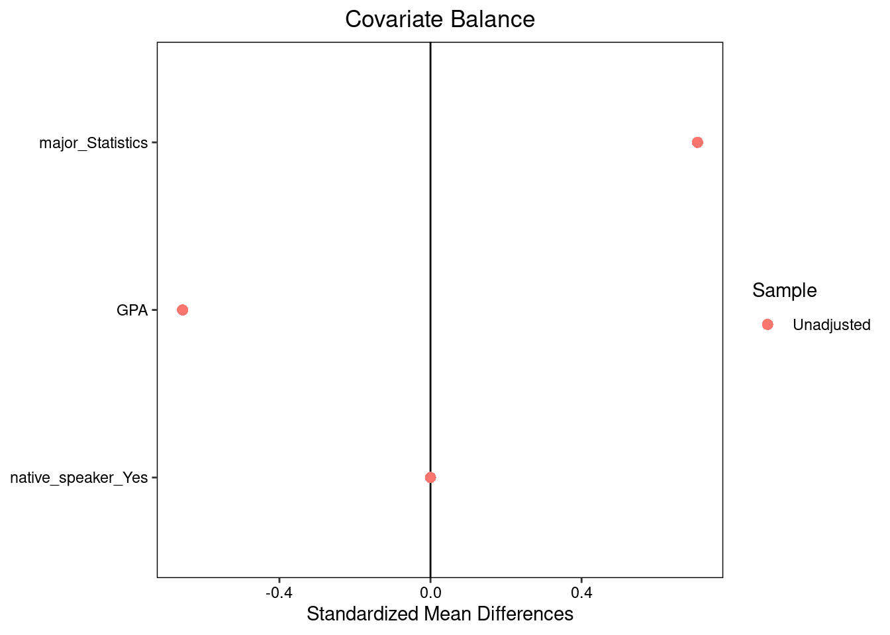
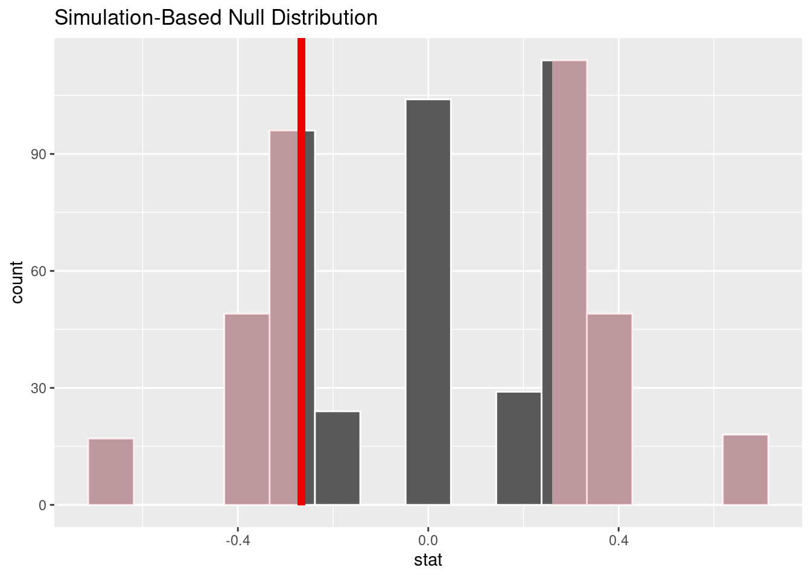

| name | group | understanding |
|---|---|---|
| Evelyn | deep | |
| Grace | shallow | |
| Juan | deep | |
| Alex | website | deep |
| Monica | website | shallow |
| Sriya | website | shallow |
Randomized Experiments
Principles of experimental design
Causation has a tricky relationship with data. We can’t observe the precise counterfactual that would allow us to identify an individual cause. Instead, statisticians use a host of methods to find a good approximation of the counterfactual, usually by focusing on a group-level quantity called an average treatment effect.
We now introduce the most important tool for approximating group-level counterfactuals, the randomized experiment.
Principles of Experimental Design
An experiment is generally characterized as being a setting where the researcher actively assigns subjects or units to one particular condition or another. The most potent design of an experiment to determine whether one variable, the treatment, affects the outcome at the group level is the aptly named Randomized Controlled Trial (RCT).
As a running example, consider an immediately relevant question: would reading these notes as a PDF lead to a deeper understanding and a correspondingly better score on the final exam than reading them as a webpage? Let’s run through each term one-by-one to think through how to design an RCT and effectively answers this question.
Control
- Control
- (noun) A second condition to which a subject or unit could be assigned that draws a contrast with the treatment condition.
-
(verb) Actions taken to eliminate other possible causal factors and ensure that the only difference between the treatment and control group is the factor of interest.
When designing an RCT, an essential decision is the nature of your control group. Our research question is: will reading these notes as a webpage result in a deeper understanding? Deeper . . . than what? Deeper than if you didn’t read the notes at all? Deeper than if you read them aloud?
If we’re most interested in the difference between reading the notes as a webpage and reading them as a pdf, we could declare those who read the pdf part of the control group and those who read the pdf as part of the treatment group. Small changes to the control group can make an important difference in the precise question that you’ll be answering.
We can visualize the distinction between the two groups in a small example with three people in the control group (pdf) and three people in the treatment group (website).
The process of computing a difference in proportions and conducting a hypothesis test for this dataset is no different than in the examples from the generalization notes. What makes this study special is the process that generated this data. Because this was a randomized controlled experiment, the difference in proportions provides a good estimate of the average treatment effect, and if it differs significantly from zero we have compelling evidence that reader format has a causal impact on understanding. We now describe some aspects of experimental design that help establish this stronger interpretation.
Random Assignment
- Random Assignment
- The process of assigning subjects to either the treatment or control group in a random fashion, where they’re equally likely to be assigned to each group.
Because we are conducting an experiment, we are intervening in the process and directly assigning subjects to either the treatment (pdf readers) and control (website readers). There are many ways we could do this. The morning sections could all be assigned the pdf and the afternoon sections the website. Or the instructors could choose to exclusively assign either the pdf or the website version of the notes to their individual sections.
The problem with both of these approaches is that our two groups might differ on more characteristics than just their reading format. The morning sections perhaps have students who are early risers and more conscientious students. Or perhaps the instructors who choose the website are more tech-savvy and more effective at teaching computing. In both cases, we invite the skeptical observer to question whether it was truly the medium of the notes that led to a difference in course grades or if it was something else.
The mechanism of random assignment is brilliant because it can snuff out every such skeptical inquiry in one fell swoop. If instead we assigned each student to read the pdf or the website totally at random, every other possible characteristic between these groups should, on average, be balanced. If students are assigned at random, we’d expect an equal number of early-risers to be in both the pdf and the website group. We’d also expect the students with the more effective instructors to be evenly represented in both groups. And so on and so forth, for every possible other characteristic that might muddy the waters of our causal claim.
Replication
- Replication
- The practice of assigning multiple subjects to both the treatment and control group. Also, the practice of repeating an experiment a second time to see if the result is consistent.
The careful reader will have noted a weakness in the brilliance of the random assignment mechanism for balancing the characteristics between the groups. What if, purely due to bad luck, we happen to randomly assign all of the early-risers to the pdf group and all of the late-risers to the website group? That would indeed bring us back to the problem of there being many ways in which our treatment group is different from our control group.
The random assignment mechanism will balance out all possible confounding factors on average, but for a given experiment that is not guaranteed. However, it becomes much more likely if we have a large sample size. If you just have four students total in the class, two of whom are early risers, it’s quite easy for both of them to end up in the pdf group if they were assigned at random. If instead you have 800 students, 400 of whom are early risers, it’s very very unlikely that all 400 will have made their way into the pdf group.
Blinding
Randomized controlled trials have long been considered the gold standard for establishing a group-level causal claim, but care must be taken to ensure that your result means what you think it means. Here we reconsider a study where a new drug was used to treat heart attack patients. In particular, researchers wanted to know if the drug reduced deaths in patients.
These researchers designed a randomized control trial because they wanted to draw causal conclusions about the drug’s effect. Study volunteers were randomly assigned to one of two study groups. One group, the treatment group, received the drug. The control group did not receive any drug treatment.
Put yourself in the place of a person in the study. If you are in the treatment group, you are given a fancy new drug that you anticipate will help you. If you are in the control group, you are not treated at all but instead sit by idly, knowing you are missing out on potentially life-saving treatment. These perspectives suggest there are actually two effects in this study: the one of interest is the effectiveness of the drug, and the second is the emotional effect of (not) taking the drug, which is difficult to quantify. In order to control for the emotional effect of taking a drug, the researchers decide to hide from patients which group they are in.
- Blinding
- The practice of keeping someone uninformed about which subjects in the study have been assigned to treatment.
When researchers keep the patients uninformed about the treatments they will receive, the study is said to be single-blind. But there is one problem: if a patient does not receive a treatment, they will know they’re in the control group. A solution to this problem is to give a fake treatment to patients in the control group. This is called a placebo, and an effective placebo is the key to making a study truly blind. A classic example of a placebo is a sugar pill that is made to look like the actual treatment pill. However, offering such a fake treatment may not be ethical in certain experiments. For example, in medical experiments, typically the control group must get the current standard of care. Oftentimes, a placebo results in a slight but real improvement in patients. This effect has been dubbed the placebo effect.
The patients are not the only ones who should be blinded: doctors and researchers can also unintentionally affect the outcome. When a doctor knows a patient has been given the real treatment, they might inadvertently give that patient more attention or care than a patient that they know is on the placebo. To guard against this, which again has been found to have a measurable effect in some instances, most modern studies employ a double-blind setup where doctors or researchers who interact with patients are, just like the patients, unaware of who is or is not receiving the treatment.
Using additional variables in experimental design
Covariates
Let’s return to our hypothetical pdf vs. website experiment and imagine that in addition to our subject’s names and understanding level we were able to collect some additional information about each of them.
| name | group | understanding | major | GPA | native_speaker |
|---|---|---|---|---|---|
| Evelyn | deep | Statistics | 3.81 | Yes | |
| Grace | shallow | Economics | 3.63 | No | |
| Juan | deep | Economics | 3.20 | Yes | |
| Alex | website | deep | Statistics | 2.85 | No |
| Monica | website | shallow | Economics | 3.19 | Yes |
| Sriya | website | shallow | Statistics | 3.80 | Yes |
We introduce a new term to draw an important distinction based on when these additional variables were collected.
- Covariate
- A variable collected in a randomized experiment that was measured or determined prior to administering the treatment.
Notice that covariates cannot be affected by the treatment since they were measured first. Variables measured after treatment, including the outcome variable, may be affected by the treatment. In our example, it’s reasonable to imagine that major, GPA, and native speaker status could all have been measured prior to the assignment, so they are covariates.
Covariate balance
Note that many of these covariates seem likely to be associated with the outcome. For example, students with a higher GPA may be more committed to doing class readings and be more likely to gain a deep understanding regardless of format. If one group had more high-GPA students, that group might look like it had benefited from its reading format even if there were no difference between the formats for any single student. This motivates us to look for a quality called balance.
- Covariate balance
- A covariate is balanced if its empirical distribution in the treated group is similar to its empirical distribution in the control group.
On the other hand, if the distributions are very different between the treatment group and the control group, we say that the covariate is imbalanced.
There is a close link between covariate balance and randomized treatment assignment. Because treatment is randomly assigned with equal probability for each individual in our study, there is no way it should be able to systematically move higher-GPA students into one of the two groups. The same is true of all our other covariates. Thus we expect randomization to balance our covariates in general.
To check the balance of our GPA variable we can calculate a measure of difference between groups for a single covariate \(x\):
\[ SMD(x) = \frac{\overline{x}_{treatment} - \overline{x}_{control}}{\sqrt{\frac{1}{2}\widehat{\sigma}_{treatment}^2 + \frac{1}{2}\widehat{\sigma}_{control}^2}} \]
This quantity is called the standardized mean difference or SMD. The numerator is just the difference in means (subtracting the control mean from the treated mean). To make the differences in means comparable across variables with very different scales, we divide by a `pooled’ standard error estimate which comes from averaging the sample variances of the covariate in the two groups and taking its square error. For GPA in our data frame above, the difference in means between groups is 3.28 \(-\) 3.55 \(=\) -0.27 and the pooled standard error is 0.41, so the SMD is -0.66.
Evaluating covariate balance across an experiment
To get a quick look at balance across all our variables, we can create a Love plot:

The Love plot displays standardized mean differences (on a common scale on the x-axis) for all the covariates in our study, highlighting which covariates are most different between groups and in which direction.
Clearly in our experiment not all variables are perfectly balanced. This alone isn’t a red flag — after all, randomized experiments only balance covariates on average, and some small differences are expected — but it can be challenging to determine whether the differences are big enough to matter, especially in a study this small.
One way to address this problem is by using hypothesis tests. For each covariate, we can test the null hypothesis that this covariate is independent of treatment and produce a p-value. In practice this is just like the tests from the generalization unit, but it uses the covariate in the test statistic instead of the outcome. Here we conduct this test for GPA.

The p-value is 0.396. Clearly the difference in means we observed for GPA is not unexpected under random treatment assignment given our small sample size. Note that although our ultimate project here is investigating a causal claim, this particular step is an example of generalization: based on the particular set of treatment assignments we see in this dataset (the sample), we are making a claim about the broader process that generated the treatment assignments.
One of the most important reasons to check covariate balance is to catch problems with how the experiment was run. Suppose that we’d intended to sort a spreadsheet in a random order and assign the top half of the subjects to pdf, but that by accident we sorted on GPA instead of randomly. In this case our covariate balance test would likely have rejected the null hypothesis that treatment was randomly assigned, allowing us to catch the issue. For this reason it is often a good idea to check balance before actually running the experiment!
The Ideas in Code
First we create a data frame to store the pdf vs. website data. ::: {.cell}
format_data <- data.frame(name = c("Evelyn", "Grace", "Juan", "Alex", "Monica", "Sriya"),
group = c("pdf", "pdf", "pdf", "website", "website", "website"),
understanding = c("deep", "shallow", "deep", "deep", "shallow",
"shallow"),
major = c('Statistics', 'Economics', 'Economics', 'Statistics',
'Economics', 'Statistics'),
GPA = c(3.81, 3.63, 3.20, 2.85, 3.19, 3.80),
native_speaker = c('Yes','No','Yes','No','Yes','Yes')):::
The cobalt package in R contains the function bal.tab to create tables of standardized differences. By passing its output to plot you can create a Love plot. Note that cobalt expect treatment variables to be numeric or logical, so we begin by converting group to the logical variable is_website1.
library(cobalt)
format_data <- format_data |>
mutate(is_website = group == 'website')
bal.tab(is_website ~ major + GPA + native_speaker, data = format_data,
s.d.denom = 'pooled', binary = 'std') |>
plot()Running balance tests uses infer much like we did in the generalization unit. The covariate for which we are testing balance is the response and the treatment is the explanatory variable.
library(infer)
set.seed(2024-3-25)
obs_stat <- format_data |>
specify(explanatory = group,
response = GPA) |>
calculate(stat = "diff in means", order = c("website","pdf"))
null <- format_data |>
specify(response = GPA,
explanatory = group) |>
hypothesize(null = "independence") |>
generate(reps = 500, type = "permute") |>
calculate(stat = "diff in means", order = c("website","pdf"))
null |>
visualize() +
shade_p_value(obs_stat, direction = 'both')Summary
You may heard the phrase “Correlation does not imply causation … unless it’s seen in data from a randomized control trial.” While it is sometimes possible to make compelling causal claims from correlations found in data - a topic we will explore in depth next week - it does highlight the particular strength of RCTs. RCTs are able to isolate the effect of interest by creating a carefully selected control group and then assigning subjects to groups at random. By using a large number of replicates and checking balance on measured covariates we can demonstrate convincingly that our control group on average serves as a close counterfactual to our treatment group.